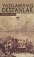
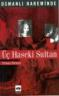

- Bu site çok güzel gerekli linkleri bir araya topluyor. şžimdide ajax, CSS vd. web derslerinin linklerini bizlere sunmuş. Link
- CSS ile text-decoration renklendirme. Link
- Ücretsiz Bilişim Teknolojileri ile ilgili e-kitaplar Link
- Resim küçük halini ve tıklayınca büyük hali gösteren bir çok script mevcut. Buna güzel bir örnek Link
- İnternetin yenilikleri ...
CSS İpuçları 11 - CSS Kodlarını Web Tarayıcıları ile Test etmek
CSS ile web sayfası oluştururken en çok yaptığımız işlerden biri yaptığımız sayfaları yazarken belirli aralıklarla web tarayıcıları ile deneyerek eğer hata var ise zamanında düzelterek sorunları büyümeden gidermektir. Ben kod yazarken her nesneyi yerleştirdikten sonra web tarayıcısı ile test ediyorum. Mesela arama bölümünü ekledikten sonra, banner alanını ekledikten sonra vb ...
devamını okuAltın Örümcek Web Ödülleri -2006 Sahiplerini bulmuş
Her sene verilen ödüller ve bir çok tartışmalara neden olan Altın Örümcek Web ödülleri sahiplerini bulmuş. Pardon sadece 1.'lere ödülleri verilmiş. 2. ve 3. lere ödülleri posta ile gönderilecekmiş. Yaratıcı Servisler kısmında 2. olan Can'ın başarılarının devamını diliyorum. Ayrıca Can'ın tasarımını yaptığı siteleride(akbank.com, yatirimci.akbank ...
devamını oku26 Ocak 2007 Web'den seçme haberler
26 Ocak 2007 Web'den seçme haberler
- CSS galeri sitelerinin listesi Link
- 10 adet CSS ipucu Link
- Gün geçmiyor ki ben sizlere buradan bir javascript kütüphanesi link vermeyeyim. Evet bu iş önemli arkadaşlar. şžimdi de Adobe bu işe el atmış ve Spry adında bir javascript kütüphanesini bizlere sunmuş. Bir çok ...
Mimlenmişiz
Evet Blogcular arasında bayağı yaygınlaşan bir mimlenme işi başlamış. Bizide H.Yaman arkadaşımız mimlemiş.
Aslında kendini anlatabilen biri değilimdir. Bu bilgisayar işi ile uğraşanların genel sorunu zannımca. Mimleme bu nedenle çıkmış bir oyun olabilir. Neyse başlayalım
- Ben bir çevre mühendisiyim. İsteyene diplomamın bir örneğini göndererim. Sınav sisteminin güzellikleri işte. Ama ...
Yazılamamış Destanlar - Mehmed Niyazi
Balkan savaşına dair yazılmış güzel bir kahramanlık destanı. Mehmed Niyazi'nin her zaman ki gibi akıcı ve insanı içine çeken güzel anlatımı ile atalarımızı bu toprakları bize bırakmak için neler çektiğini, ne kahramanlıklar gösterdiklerini anlatan çok güzel bir eser. İnsanın milli ve manevi duygularını kabartıyor. Arka Kapak: Rusya Balkanlar'da ...
devamını oku23 Ocak 2007 WEb'den seçme haberler
- Daha önceki haberlerde de bahsettiğimiz Javascript kütüphanesi Prototype'ın son sürümü çıkmış. Link
- Açık kaynak kod olurda açık kaynak tasarım olmaz mı? Olur işte link
- CSS3.0 yavaş yavaş geliyor. Opera CSS 3.0 destekliyor artık. Link
- Web sitenizi istatistik bilgilerini size sunan bir site Link
- Bir Web2.0 furyasıdır ...
20 Ocak 2007 Web'den seçme haberler
20 Ocak 2007 Web'den seçme haberler
- İlk haber kendi not defterimdeki bir düzenlemeden. Sitemde okuduğum kitapların listesini ve bir kaç satır özetini yayınlıyorum. CSS kısmına ağırlık verdiğim için kitapları anasayfada yayınlamama kararı aldım. Listelerde ve RSS'de olacak ancak anasayfada çıkmayacak bilginize
- AltıÜstü Tasarım sitesinde "Form Tasarımı Hakkında Birkaç ...
Üç Haseki Sultan - Yılmaz Öztuna
Osmanlı Develetine farklı açıdan bakan bu kitap gayet akıcı anlatımı ile bize güzel bilgiler veriyor. Kitabı nasıl özetleyeceğimi tam anlat isterken kitabın son sayfasındaki aşağıdaki alıntıyı yapmam yeterli olur diye düşündüm. "Zira kadın tesiri, Türk tarihinde daima politik zararlara, devletin tahribine neden olmuştur." İstisnalar müstesna... Yayıncıdan: Safiye Sultan... Kösem Mahpeyker ...
devamını oku18 Ocak 2007 Web'den seçme haberler
18 Ocak 2007 Web'den seçme haberler
- Erişebilirlik açısından yapılan genel yapılan hatalar hakkında bir makale Link
- HTML 5 ve XHTML 2.0 çalışmaları başlamış. Link
- WordPress 2.0.7 versiyonu çıktı. PHP güvenlik açığı ve Feedburner sorunu yeni versiyonun çıkmasına neden olmuş. Link
- Internet Explorer 7 Türkçe çıktı. Ayrıca ...